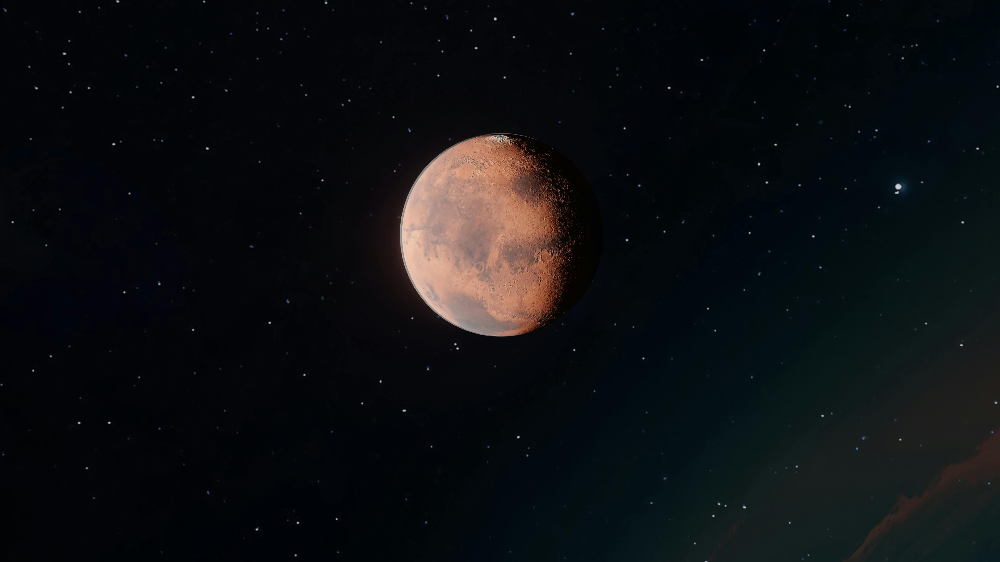

Tudo que você precisa saber sobre o grande Planeta Vermelho
Exploração de Marte
Desde o início da era espacial, Marte tem sido um dos principais alvos da exploração espacial. Com sua aparência avermelhada e clima misterioso, o planeta fascina cientistas e curiosos há décadas. A primeira missão bem-sucedida a Marte foi a Mariner 4, lançada pela NASA em 1964. Ela enviou as primeiras imagens próximas do planeta, revelando uma superfície cheia de crateras, o que frustrou as expectativas de encontrar sinais de vida.

Clima e Geografia
Marte é um planeta frio e seco, com temperaturas médias de -60°C. Sua atmosfera é composta principalmente por dióxido de carbono, com traços de oxigênio e vapor d’água. A geografia marciana inclui vulcões gigantes como o Olympus Mons, o maior vulcão do sistema solar, e vales profundos como o Valles Marineris, um cânion que se estende por mais de 4 mil quilômetros.
Se você quiser saber mais coisas sobre esse grande e íncrivel Planeta, acesse o Site oficial da NASA!